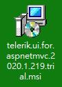
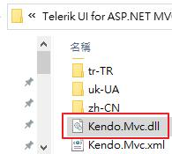

一個基本的 Kendo UI 的使用範例如下
<!DOCTYPE html> <html> <head> <meta charset="utf-8" /> <title>Kendo UI Snippet</title> <link href="https://kendo.cdn.telerik.com/2020.1.406/styles/kendo.common.min.css" rel="stylesheet" /> <link href="https://kendo.cdn.telerik.com/2020.1.406/styles/kendo.default.min.css" rel="stylesheet" /> <script src="https://code.jquery.com/jquery-1.12.3.min.js"></script> <script src="https://kendo.cdn.telerik.com/2020.1.406/js/kendo.all.min.js"></script> </head> <body> <div id="grid"></div> <script> $(document).ready(function () { $("#grid").kendoGrid({ columns: [ { field: "FirstName", title: "First Name" }, { field: "LastName", title: "Last Name" } ], dataSource: { data: [ { FirstName: "Joe", LastName: "Smith" }, { FirstName: "Jane", LastName: "Smith" } ] } }); }); </script> </body> </html>
說明：
1、一開始你要使用 Kendo UI 時，你必須要載入跟 Kendo UI 相關的 css、js 檔案。
2、你需要準備一個目標元素，例如：<div id="grid"></div>。
3、撰寫 script 把目標元素做成 kendoGrid。
4、額外一提，如果事後想要去取得已經做成 kendo grid 的實體，可使用下列程式碼
var grid = $("#grid").data("kendoGrid");
5、Kendo 不只可以把目標元素做成 grid，他也可以做 Dialog、calendar ...等等，
使用語法其實都大同小異，將目標做成某種 Kendo 元件
$().kendoGrid();
$().kendoDialog();
$().kendoCalendar();
官方有提供原始碼範例與套件下載讓你使用，參考網址如下

如果你不想留個資的話，欄位可亂填，不需 e-mail 驗證，
以下載 Kendo UI for jQuery 為例，官方提供 30 天試用，
試用期過後也可繼續使用，但會不定期於頁上秀出提醒訊息。
下載好的檔案如下

安裝好後，於桌面會產生一個捷徑，他是一個展示頁面，

跟 https://demos.telerik.com/aspnet-mvc/ ，內容是一樣的。
那我們到 C:\Program Files (x86)\Progress\Telerik UI for ASP.NET MVC R1 2020\wrappers\aspnetmvc\Examples\VS2017
找到一個專案檔

他就是官方原始碼範例
另外於路徑
C:\Program Files (x86)\Progress\Telerik UI for ASP.NET MVC R1 2020\wrappers\aspnetmvc\Binaries\Mvc5
可找到 Kendo.Mvc.dll 檔，這是 kendo 核心元件，後端的應用都要去參考他。

參考資料：
另外推薦 Grid Overview - Advance Reading 內的五篇超連結文章內容都應該看一下